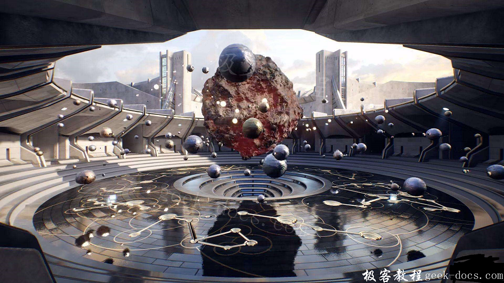

Vulkan 基本类型，Vulkan 开发需要设计的类型非常多，本文介绍常用的 Vulkan 基本类型，主要包含设备、队列、命令缓冲、队列家族、渲染通，管线等，具体内容如下所示：

| VulkanTypeName | Vulkan类型 | 说明 |
|---|---|---|
| 实例 | VkInstance | 用于存储Vulkan程序相关状态的软件结构，可以在逻辑上区分不同的Vulkan应用程序或者同一应用程序内部不同的Vulkan上下文 |
| 物理设备 | VkPhysicalDevice | 对系统中 GPU 硬件的抽象，每个 GPU 对应一个物理设备。另外，每个实例下可以有多个物理设备 |
| 设备 | VkDevice | 基于物理设备创建的逻辑设备，本质上是存储信息的软件结构，其中主要保留了与对应物理设备相关的资源。每个物理设备可以对应多个逻辑设备 |
| 命令池 | VkCommandPool | 服务高效分配命令缓冲 |
| 命令缓冲 | VkCommandBuffer | 用于记录组成绘制或计算任务的各个命令，在命令池中分配。若执行的是不变的绘制命令，可以对记录了命令的命令缓冲进行重用 |
| 命令缓冲启动信息 | VkCommandBufferBeginInfo | 携带了命令缓冲启动时必要信息的对象 |
| 命令缓冲提交信息 | VkSubmitInfo | 携带了命令缓冲提交给队列执行时必要信息的对象，包括需要等待的信息量数量、等待的信号量列表、命令缓冲数量、命令缓冲列表、触发的信号量数量触发的信号量列表等 |
| 列表家族属性 | VkQueueFamilyProperties | 携带了特定队列家族属性信息的软件结构，包括家族中队列的数量、能力标志等。每一个队列家族中可能含有多个能力相近的队列，常用的队列家族主要有支持图形任务和计算任务的两大类 |
| 队列 | VkQueue | 功能为接收提交的任务，将任务按序由所属GPU硬件依次执行 |
| 格式 | VkFormat | 一个枚举类型，包含了Vulkan开发中用到的各种内存组织形式，如VK_FORMAT_R8G8B8A8_UNORM 就表示支持RGBA四个色彩通道，每个通道8个数据比特 |
| 2D尺寸 | VkExtent2D | 用于记录2D尺寸的结构体，有width和height两个属性 |
| 图像 | VkImage | 设备内存的一种使用模式，这种模式下对应的内存用于存储图像像素数据，其中存储的像素数据可能是来自于纹理图像也可能是来自于绘制任务的结果等 |
| 图像视图 | VkImageView | 配合图像对象使用，其中携带了对应图像的类型、格式、色彩通道交换设置等方面的信息 |
| 交换链 | VkSwapchainKHR | 将画面呈现到特定目标平台(如windows, Android, Linux等)窗体或者表面的机制，通过它可以提供多个用于呈现的图像。这些图像与目标平台相关，可以看作目标平台呈现用KHR表面的抽象接口。持续换帧呈现时交替使用其中的多个图形执行，避免用户看到绘制过程中的画面引起画面撕裂。一般情况下，交换链中至少有两个用于呈现的图像，有些设备中数量会更多 |
| 帧缓冲 | VkFrameBuffer | 为绘制服务，其中可以包含颜色附件(用于记录一帧画面中各个像素的颜色值)、深度附件（用于记录一帧画面中各个像素的深度值）、模板附件（用于记录一帧画面中各个像素的模板值）等 |
| 缓冲 | VkBuffer | 设备内存的一种使用模式，这种模式下对应的内存用于存储各种数据。比如：绘制用顶点信息数据、绘制用一致变量数据等 |
| 缓冲描述信息 | VkDescriptorBufferInfo | 携带了描述缓冲信息的结构体，包含对应缓冲、内存偏移量、范围等 |
| 渲染通道 | VkRenderPass | 其中包含了一次绘制任务需要的各方面信息，诸如颜色附件、深度附件情况，子通道列表、子通道相互依赖信息等，用于向驱动描述绘制工作的结构、过程。一般来说，每个渲染通道从开始到结束将产生一帧完成的画面 |
| 清除内容 | VlClearValue | 包含了每次绘制前清除帧缓冲所用数据的相关值，主要有清除用颜色值，深度值、模板值 |
| 渲染通道启动信息 | VkRenderPassBeginInfo | 携带了启动渲染通道时所需的信息，包括对应的渲染通道、渲染区域的位置及尺寸、绘制前的清除数据值等 |
| 渲染子通道描述 | VkSubpassDescription | 一个渲染通道由多个子通道组成，至少需要一个子通道。每个子通道用一个VkSubpassDescription实例描述，其中包含了此子通道的输入附件，颜色附件，深度附件等方面的信息 |
| 描述集布局 | VkDescriptionSetLayout | 服务于描述集，给出布局接口。通俗讲就是给出着色器中包含了哪些一致变量、分别是什么类型、绑定编号是什么、对应于哪个管线阶段（比如顶点着色器、片源着色器）等 |
| 描述集 | VkDescriptorSet | 用于绘制前更新着色器所需的一致变量等 |
| 写入描述集 | VkWriteDescriptorSet | 用于绘制前更新着色器所需的一致变量等 |
| 描述集池 | VkDescriptorPool | 用于高效地分配描述集 |
| 管线布局 | VkPipelineLayout | 描述管线整体布局，包括哪些推送常量、有哪些描述集等 |
| 管线 | VkPipeline | 包含了执行指定绘制工作对应管线的各方面信息、诸如管线布局、顶点数据输入情况、图元组装设置、光栅化设置、混合设置、视口于剪裁设置、深度及模板测试设置、多重采样设置等 |
| 着色器阶段创建信息 | VkPipelineShaderStageCreateInfo | 携带了单个着色器阶段信息的对象，包括着色器的SPIR-V模板、着色器主方法名称、着色器对应阶段（比如顶点着色器、片元着色器、几何着色器、曲面细分着色器）等 |
| 顶点输入绑定描述 | VkVertexInputBindingDescription | 用于描述管线的顶点数据输入情况，包括绑定点编号，数据数据频率(比如每顶点一套数据)、数据间隔等 |
| 顶点输入属性描述 | VkVertexInputAttributeDescription | 描述顶点输入的某项数据信息（比如顶点位置、顶点颜色），包括绑定点编号、位置编号、数据格式、偏移量等 |
| 管线缓冲 | VkPipelineCache | 为高效地创建管线提供支持 |
| 格式属性 | VkFormatProperties | 用于存储执行格式类型（比如 VK_FORMAT_D16_UNORM）的格式属性，包括线性瓦片特征标志、最优化瓦片特征标志、缓冲特种标志等 |
| 物理设备内存属性 | VkPhysicalDeviceMemoryProperties | 用于存储获取的基于指定GPU的设备内存属性，包括内存类型数量、内存类型列表、内存堆数量、内存堆列表等 |
| 设备内存 | VkDeviceMemory | 设备内存的逻辑抽象，前面提到的缓冲(VuBuffer)、图形(VkImage)都需要绑定设备内存才能正常工作 |
| 信号量 | VkSemaphore | 用于一个设备(GPU)内部相同或不同队列并发执行任务时的同步工作，一般与方法VkQueueSubmit配合使用，以确保通过VkQueueSubmit方法提交的任务在指定信号量未触发前阻塞直至信号量触发后才执行。要特别注意的是，若有多个提交的任务同时等待同一个信号量触发，则此信号量的触发仅仅会被一个等待的任务接收到，其他等待的任务还将继续等待。这里的“同步”指的是并发执行时解决冲突的一种策略，有兴趣的读者可以进一步查阅相关资料 |
| 栅栏 | VkFence | 用于主机和设备之间的同步，通俗地讲就是用于CPU和GPU并发执行任务时的同步 |
| KHR表面 | VkSurfaceKHR | 此类对象服务于帧画面的呈现 |
| KHR表面能力 | VkSurfaceCapabilitiesKHR | 携带了用于呈现画面的表面相关呈现能力的信息，比如画面尺寸范围、交换链中的图像数量、是否支持屏幕交换等 |
| 呈现信息 | VkPresentInfoKHR | 携带了执行呈现时所需的一些信息，包括需要等待的信号量数量、信号量列表、交换链的数量、交换链列表、此次呈现的图像在交换链中的索引等 |
极客教程相关文章推荐，欢迎阅读！
Vulkan RunTime Libraries
Vulkan Visual Studio环境配置
什么是 Vulkan
Vulkan和OpenGL区别